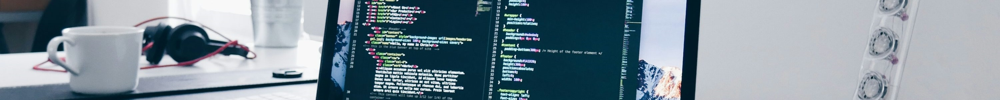

Faes Kevin
Home
Experiences
My Experiences
Curriculum Vitae
About me
Contact
Gegevens:
Faes Kevin
Rivierstraat 50, 2300 Turnhout
0479 27 37 67
kevin.faes@student.thomasmore.be
° 6 oktober 1988 in Turnhout
Opleidingen:
Graduaat Programmeren
- Thomas More Turnhout (2024 - Heden)
Programming Essentials (C#)
Database Essentials (Azure, SQL, Docker)
Websites (HTML/CSS)
Technicus Automatisering
- VDAB Turnhout (2015 - 2016)
Basis elektriciteit
Pneumatica/Electro-pneumatica
Schakeltechnieken
Frequentiesturingen
Veiligheidstechnieken
Opsporen van storingen
Ontwerpen en montage van besturingskast met Micromaster frequentiesturing
PLC programmeren in S7
Elektronica Automatisering (HBO5)
- CVO Turnhout (2013 - 2014)
Houtbewerking (A2 getuigschrift)
- VTST Turnhout (2001 - 2006)
Werkervaring:
Hef en reach-truckchauffeur
- Vos Logistics (10/2023 - 08/2024)
Siteverantwoordelijke
- Biogas de Biezen/Mestverwerking Leemans (05/2023 - 08/2023)
Allround magazijnier/reserve teamleader (weekendploeg)
- Henco Industries (06/2021 - 04/2023)
Hef en reach-truckchauffeur/reserve teamleader
- Vos Logistics (12/2017 - 05/2021)
Technieker
- Sterkens Alarmsystemen (06/2017 - 12/2017)
Technieker
- Glacio (01/2017 - 05/2017)
Technieker
- Iris Anticorrosion (04/2016 - 12/2016)
Operator in de stansafdeling en de plak-/plooi afdeling
- Smurfit Kappa Turnhout (08/2014 - 05/2015)
Montage en afwerking van liften
- Lift-It Vosselaar (06/2014 - 08/2014)
Technisch operator/intern transport
- Soudal Turnhout (09/2006 - 06/2014)
Vaardigheden:
Flexibel
Communicatief
Resultaatgericht
Leergierig
Ambitieus
Kwaliteitsgericht
Humoristisch